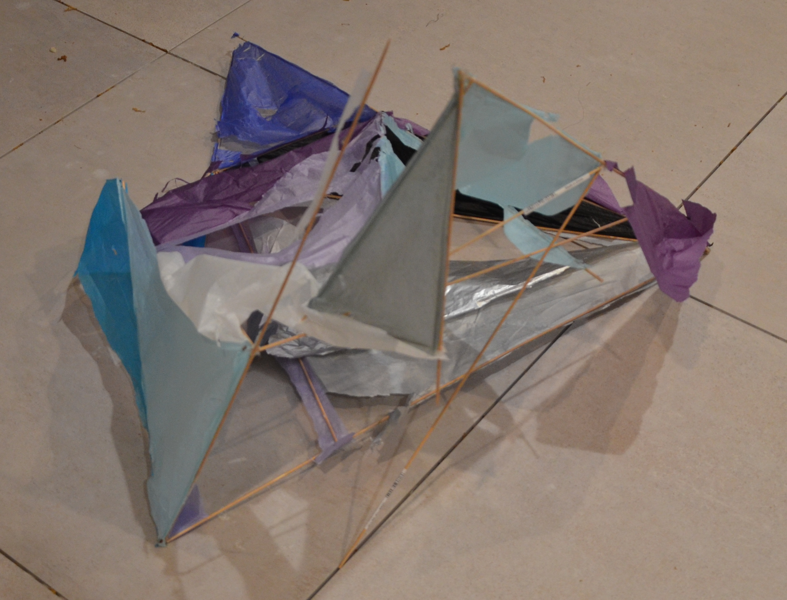

Deconstruct, Reconstruct
By Ashna Reddy ('20)
Initially, I came into this semester wanting to explore how people affect objects. I wanted to take the theme of
interaction from my last semester’s exhibition even further and push the boundaries between participant and artist. I
was also drawn to the idea of preciousness; from an artist's perspective I wanted to release the impulse to save my
works from change or existence. I knew I wanted to play with destruction as a way for the viewer to take a more active
role in my art. I assumed that the viewer would interact with my work physically displayed in The Shah Gallery.
Quarantine completely shifted my original thought process because I had to figure out how to create interaction with the viewer in my now isolated world. While I was not able to explore the relationship between artist and viewer as I had originally thought, this unique situation led me to consider the relationship between artist and reconstructor. I took inspiration from artist Walead Beshty, who shipped fragile glass sculptures in FedEx boxes and observed the resulting cracks in the works from their transport as a “fingerprint” of the journey.
For this exhibition, my carefully constructed sculptures were shipped to friends across the world, going so far as India. I wasn't precious in the manner in which I packaged my works for shipping to allow for the inevitable UPS destruction of my sculptures as they traveled to their destinations. I wanted the recipients of my works to have little indication of what my work was supposed to look like and instead asked for them to reconstruct the work themselves, encouraging them to create something new. It was an interesting experience to witness their process of reimagination firsthand. In our time of social distancing, I felt connected to the receiver as a collaborator, not just a viewer. As these sculptures took on different forms from different makers they also carried each of our fingerprints as the works traveled to and from their destinations. More than anything, this exhibition has taught me how to let go of my initial perceptions of an object and embrace the process of losing control.
Quarantine completely shifted my original thought process because I had to figure out how to create interaction with the viewer in my now isolated world. While I was not able to explore the relationship between artist and viewer as I had originally thought, this unique situation led me to consider the relationship between artist and reconstructor. I took inspiration from artist Walead Beshty, who shipped fragile glass sculptures in FedEx boxes and observed the resulting cracks in the works from their transport as a “fingerprint” of the journey.
For this exhibition, my carefully constructed sculptures were shipped to friends across the world, going so far as India. I wasn't precious in the manner in which I packaged my works for shipping to allow for the inevitable UPS destruction of my sculptures as they traveled to their destinations. I wanted the recipients of my works to have little indication of what my work was supposed to look like and instead asked for them to reconstruct the work themselves, encouraging them to create something new. It was an interesting experience to witness their process of reimagination firsthand. In our time of social distancing, I felt connected to the receiver as a collaborator, not just a viewer. As these sculptures took on different forms from different makers they also carried each of our fingerprints as the works traveled to and from their destinations. More than anything, this exhibition has taught me how to let go of my initial perceptions of an object and embrace the process of losing control.
The Process
To Mumbai
To New Jersey


To Boston